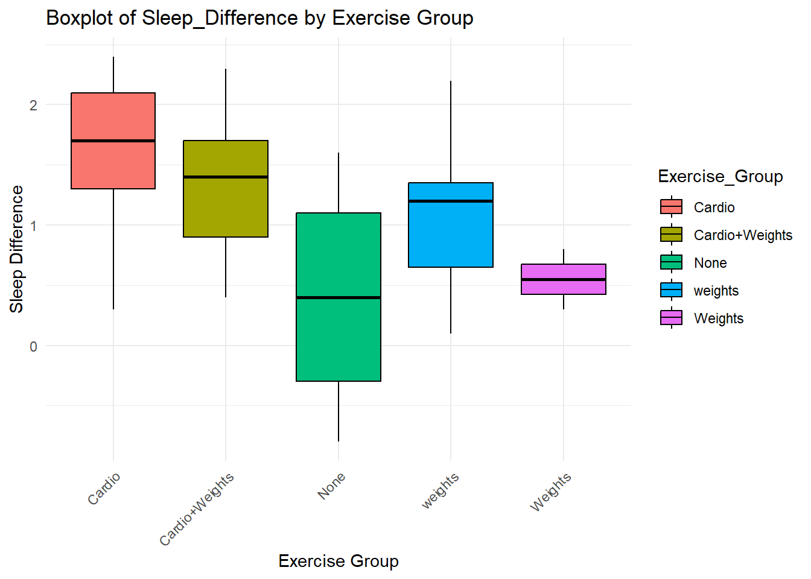
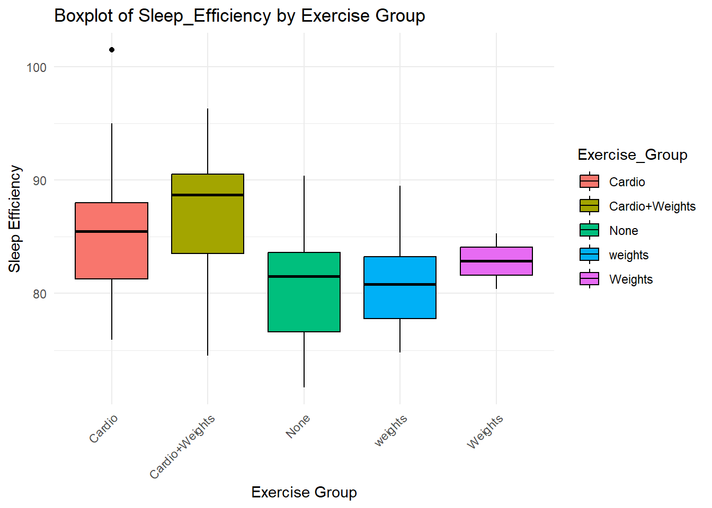
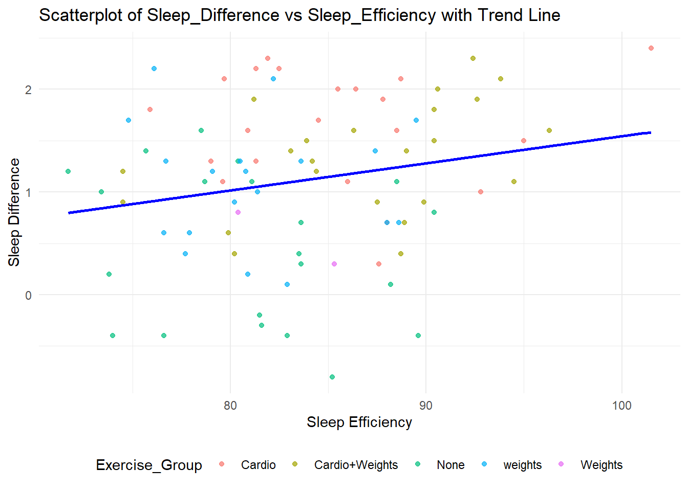

ID Exercise_Group Sex Age Pre_Sleep_New Post_Sleep Sleep_Efficiency
1 P001 None Male 35 5 4.7 81.6
2 P002 None Male 57 6 7.4 75.7
3 P003 None Female 26 NA 6.2 82.9
4 P004 None Female 29 7 7.3 83.6
5 P005 None Male 33 7 7.4 83.5
6 P006 None Female 33 6 7.1 88.5
Sleep_Difference
1 -0.3
2 1.4
3 NA
4 0.3
5 0.4
6 1.1
participant_sleep_merge <- participant_sleep_merge %>%mutate(AgeGroup2 =case_when( Age <40~"<40", Age >=40~">=40",TRUE~NA_character_))head(participant_sleep_merge)
ID Exercise_Group Sex Age Pre_Sleep_New Post_Sleep Sleep_Efficiency
1 P001 None Male 35 5 4.7 81.6
2 P002 None Male 57 6 7.4 75.7
3 P003 None Female 26 NA 6.2 82.9
4 P004 None Female 29 7 7.3 83.6
5 P005 None Male 33 7 7.4 83.5
6 P006 None Female 33 6 7.1 88.5
Sleep_Difference AgeGroup2
1 -0.3 <40
2 1.4 >=40
3 NA <40
4 0.3 <40
5 0.4 <40
6 1.1 <40
ggplot(participant_sleep_merge, aes(x = Exercise_Group, y = Sleep_Difference)) +geom_boxplot(aes(fill = Exercise_Group), color ="black") +labs(title ="Boxplot of Sleep_Difference by Exercise Group",x ="Exercise Group",y ="Sleep Difference") +theme_minimal() +theme(axis.text.x =element_text(angle =45, hjust =1))

Figure 1: This graph shows sleep difference when categorized by exercise group.
ggplot(participant_sleep_merge, aes(x = Exercise_Group, y = Sleep_Efficiency)) +geom_boxplot(aes(fill = Exercise_Group), color ="black") +labs(title ="Boxplot of Sleep_Efficiency by Exercise Group",x ="Exercise Group",y ="Sleep Efficiency") +theme_minimal() +theme(axis.text.x =element_text(angle =45, hjust =1))

Figure 2: This graph shows sleep efficiency when categorized by exercise group.
ggplot(participant_sleep_merge, aes(x = Sleep_Efficiency, y = Sleep_Difference)) +geom_point(aes(color = Exercise_Group), alpha =0.7) +geom_smooth(method ="lm", color ="blue", se =FALSE) +labs(title ="Scatterplot of Sleep_Difference vs Sleep_Efficiency with Trend Line",x ="Sleep Efficiency",y ="Sleep Difference") +theme_minimal() +theme(legend.position ="bottom")
`geom_smooth()` using formula = 'y ~ x'

Figure 3: This graph shows sleep efficiency/difference when categorized by participants.
T-tests (Two)
T-test 1: Sleep_Difference ~ Sex
t_test_sex <-t.test(Sleep_Difference ~ Sex, data = participant_sleep_merge)t_test_sex
Welch Two Sample t-test
data: Sleep_Difference by Sex
t = 1.4956, df = 82.199, p-value = 0.1386
alternative hypothesis: true difference in means between group Female and group Male is not equal to 0
95 percent confidence interval:
-0.0776382 0.5481291
sample estimates:
mean in group Female mean in group Male
1.2163265 0.9810811
There is no significant difference between males (mean = 1.00) and females (mean = 1.22) during sleep when the p-value is 0.14.
T-test 2: Sleep_Difference ~ AgeGroup2
t_test_agegroup <-t.test(Sleep_Difference ~ AgeGroup2, data = participant_sleep_merge)t_test_agegroup
Welch Two Sample t-test
data: Sleep_Difference by AgeGroup2
t = -1.6961, df = 33.044, p-value = 0.09927
alternative hypothesis: true difference in means between group <40 and group >=40 is not equal to 0
95 percent confidence interval:
-0.65568817 0.05945879
sample estimates:
mean in group <40 mean in group >=40
1.049254 1.347368
There is no significant difference between peope under 40 (mean = 1.05) and people equal to or over 40 (mean = 1.35) during sleep when the p-value is 0.10.
Anovas (two) + Post-Hocs
anova_A <-aov(Sleep_Difference ~ Exercise_Group, data = participant_sleep_merge)summary(anova_A)
Df Sum Sq Mean Sq F value Pr(>F)
Exercise_Group 4 16.62 4.154 11.19 2.83e-07 ***
Residuals 81 30.07 0.371
---
Signif. codes: 0 '***' 0.001 '**' 0.01 '*' 0.05 '.' 0.1 ' ' 1
library(supernova)supernova(anova_A)
Analysis of Variance Table (Type III SS)
Model: Sleep_Difference ~ Exercise_Group
SS df MS F PRE p
----- --------------- | ------ -- ----- ------ ----- -----
Model (error reduced) | 16.616 4 4.154 11.188 .3559 .0000
Error (from model) | 30.074 81 0.371
----- --------------- | ------ -- ----- ------ ----- -----
Total (empty model) | 46.690 85 0.549
The F value is 11.188, the p-value is 0.00, with degree of freedom being 85. Based on those results, there is significant difference effect of Exercise_Group on Sleep_Difference.
It seems like Exercise_Group has a significant influence on Sleep_Difference(Cardio, Cardio+Weights, and Weights) compare to no exercise at all. Although, the Weights and Cardio+Weights groups did not show significant differences when compared to each other, nor with the None group in some instances. Carddio seems to show the least amount of difference from the other groups for Sleep_Difference.
anova_B <-aov(Sleep_Efficiency ~ Exercise_Group, data = participant_sleep_merge)summary(anova_B)
Df Sum Sq Mean Sq F value Pr(>F)
Exercise_Group 4 544.7 136.17 4.432 0.00273 **
Residuals 81 2488.7 30.72
---
Signif. codes: 0 '***' 0.001 '**' 0.01 '*' 0.05 '.' 0.1 ' ' 1
library(supernova)supernova(anova_B)
Analysis of Variance Table (Type III SS)
Model: Sleep_Efficiency ~ Exercise_Group
SS df MS F PRE p
----- --------------- | -------- -- ------- ----- ----- -----
Model (error reduced) | 544.688 4 136.172 4.432 .1796 .0027
Error (from model) | 2488.650 81 30.724
----- --------------- | -------- -- ------- ----- ----- -----
Total (empty model) | 3033.339 85 35.686
The F value is 4.438, the p-value is 0.00, with degree of freedom being 85. Based on those results, there is significant difference effect of Exercise_Group on Sleep_Difference.
It seems like Exercise_Group or type has a significant influence on Slee_Efficiency because the exercise type can at least explain a portion of the variation in Sleep_Effiency.
Synthesis & Recommendation
Looking at Sleep_Difference and Sleep_Efficiency, I think that Cardio+Weights is a good candidate for improving sleep. The results showed that Exercise_Group significantly improved sleep quality in Sleep_Difference compared Sleep_Efficiency (11.188 and p = 0.00 for Sleep_Difference and 4.432 and p = 0.00 for Sleep_Efficiency). That means, Exercise_Group had a significant on sleep overall. The Tukey provides more in depth analysis on how effective different type of exercises are.
Reflection
I found cleaning the columns somewhat difficult. I would create or delete columns that I totally need while the ones that I do not remained. I guess that is a an error on my part. I also found the ANOVA part somewhat challenging. With so many numbers in a table, I could not keep track on what I should pay attention to the most and reporting the F-value for different exercise type was not exactly easy as the table was not really intuitive in letting you know what the numbers really mean.
Checklist
[y] Imported both sheets and merged cleanly on ID
[y] Cleaned Pre_Sleep to numeric and created Sleep_Difference
[y] Created AgeGroup2 (two-level) via case_when
[y] Produced descriptive statistics for both outcomes
[y] Made 3 clear plots with labels/titles
[y] Ran TWO t-tests (Sex, AgeGroup2) on Sleep_Difference
[y] Ran TWO ANOVAs (Exercise_Group) on Sleep_Difference and Sleep_Efficiency
[y] Performed Tukey post-hoc tests and interpreted pairwise differences
[y] Verified that all figures and tables display meaningful, readable labels and legends.
[y] Wrote a concise recommendation supported by stats and visuals
[y] Converted this work into an R Markdown report with narrative + code